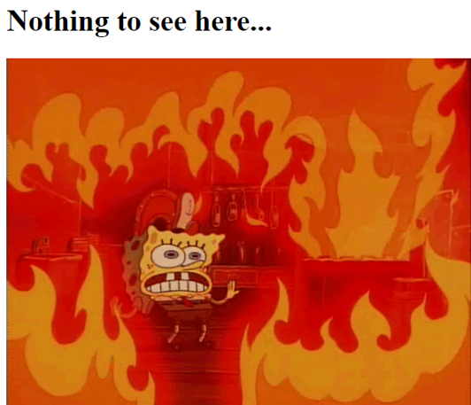
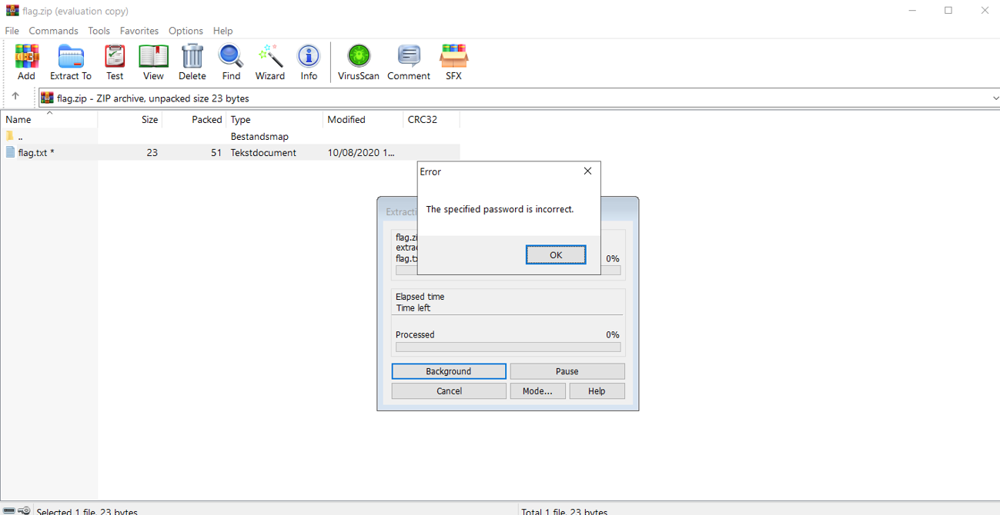
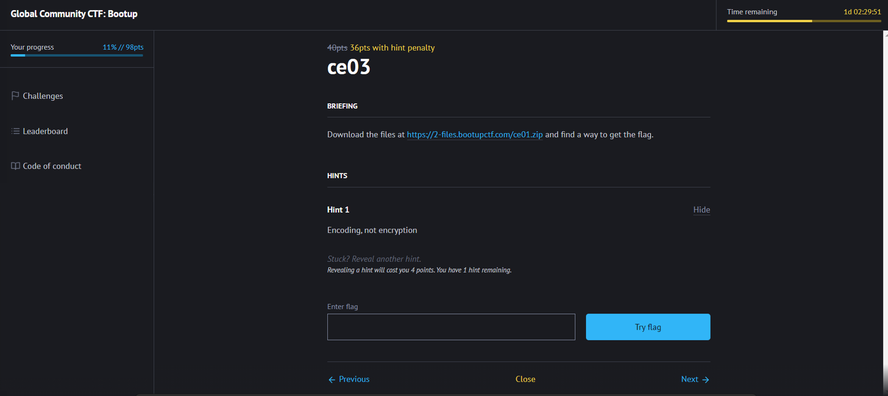

Ranges.io organiseerde een capture the flag evenement die begon op 14 oktober 2021 om 18u en eindigde op 16 oktober 2021 18u.
Dit evenement duurde twee dagen en was best wel technisch. Er waren verschillende niveau's van moeilijkheid. Verschillende niveau's waren: intro, easy, medium en hard.
De intro challenges waren heel simpel en waren gewoon als opwarming voor de echte challenges. Hier kreeg je ook punten voor die makkelijk te behalen waren. Een voorbeeld van een easy challenge was om de flag uit een image te halen. Dit kon je vinden door een steganography tool te gebruiken op de foto. Hieronder vindt u de foto in kwestie:
De medium challenges waren ook nog haalbaar vind ik, alhoewel er wel wat moeilijkere tussen zaten. Er zat een challenge tussen waarbij je een zip-file met wachtwoord moest kraken door middel van hashes te cracken. Dit was 1 van de challenges die ik niet heb kunnen oplossen.
Voor de moeilijke challenges heb ik niet veel flags kunnen vinden. Dit waren geavanceerde opdrachten, waarbij je verborgen files moest vinden of moest bruteforcen. De hard challenges geven uiteraard de meeste punten per challenge. Ook hoe meer mensen een challenge al hebben opgelost, daar krijg jij dan minder punten voor omdat je "te laat" bent.
De organisatie geeft ook hints per challenge. Het hangt af hoeveel tips je krijgt per challenge maar in het algemeen krijg je er ongeveer 3. Dit vermindert ook het aantal punten je krijgt als je de flag vindt. Ik vond dat sommige hints nutteloos waren en niets betekenden.
Ik zou dit evenement opnieuw bewonen en raad dit zeker aan voor de mensen die geïnteresseerd zijn in CTF's. Er zijn verschillende niveau's, dus je moet niet de meest ervaren persoon zijn om mee te doen.